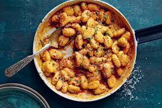

Ingredients and Quantities
- Potatoes - Use starchy potatoes, such as russets.
- Flour - All purpose flour absorbs moisture and helps create gluten.
- Egg - An egg lends moisture and acts as a binder, which means it
helps hold the dumplings together.
Cooking Instructions
- Boil and mash the potatoes.
- Combine the ingredients, then knead into a ball.
- Shape the dough into "snakes".
- Cut the snakes into pieces.
- Boil and drain the gnocchi.

GNOCCHI